Перед тем, как рассказать об этих играх, давайте разъясним понятие "платина" для тех, кто не знаком
с этим термином. В мире видеоигр "платина" обычно используется для обозначения достижения 100% завершения игры. Получение платины
подразумевает успешное завершение всех задач, выполнение достижений и обнаружение всех секретов в игре. Это высшее достижение,
которое показывает полное освоение игрового мира.
Количество моих платин:
Одни из нас: Часть I
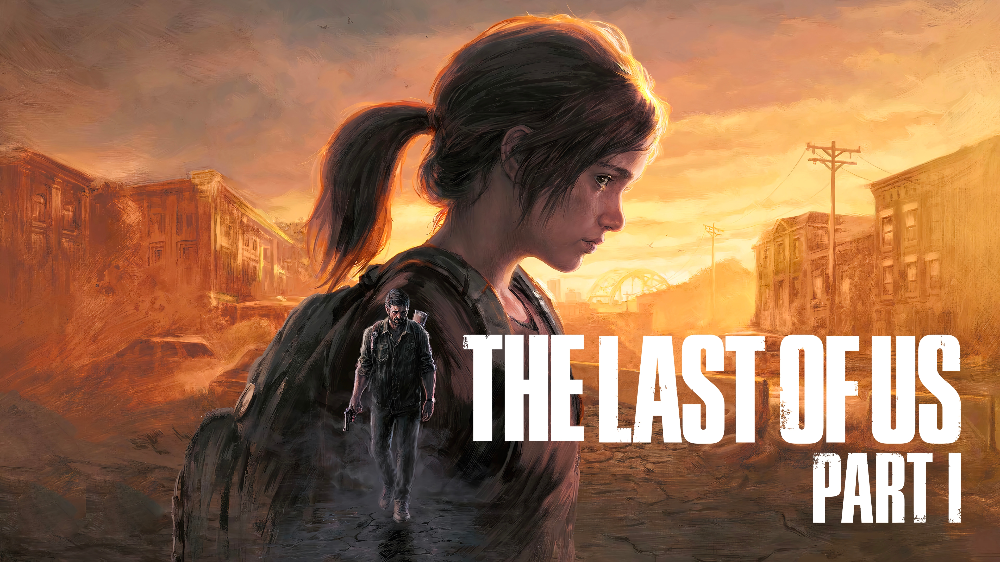
Одни из нас: Часть I — это постапокалиптическая видеоигра, в которой игроки следуют за персонажами Джоэлом и Элли в мире,
пораженном инфекцией, превращающей людей в враждебных мутантов. Джоэл и Элли отправляются в путешествие через опустошенные
ландшафты, сталкиваясь с опасностями и другими выжившими, чтобы доставить Элли к группе сопротивления. В ходе путешествия
развиваются связи между персонажами, а игрок сталкиваются с моральными дилеммами и трудными решениями в мире,
где выживание часто требует жертв.
Одни из нас: Часть II
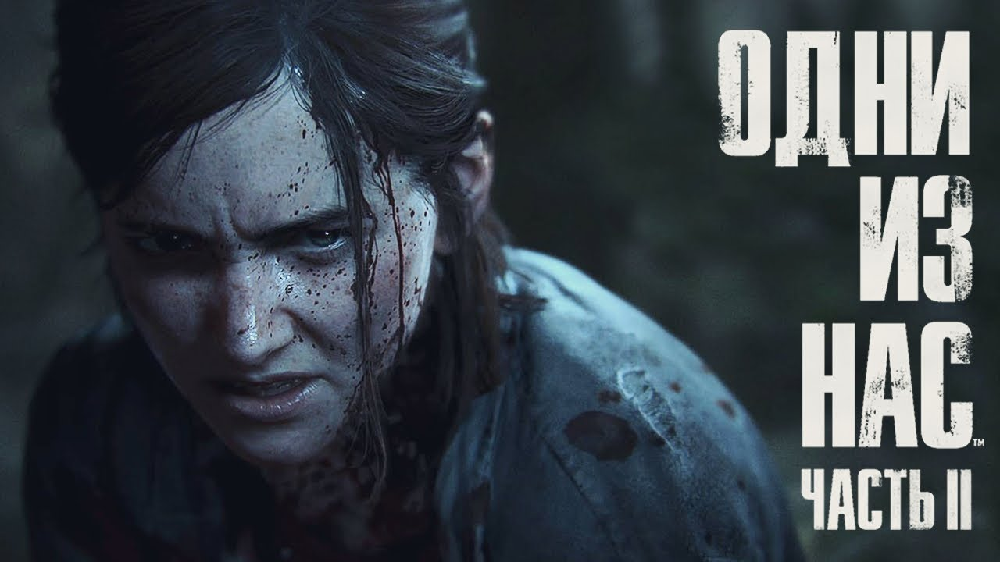
Одни из нас: Часть II — это продолжение игры Одни из нас. История следует за Элли, выросшей после событий первой части,
и её стремлением к мести за потери, пережитые ею и её близкими. Игроки вновь отправляются в постапокалиптический мир, на этот раз,
исследуя новые локации и взаимодействуя с новыми персонажами. The Last of Us Part II предоставляет игрокам сложные моральные выборы,
внушительное повествование и глубокие характеры, вписываясь в атмосферу выживания и человеческих отношений в опустошенном мире.
Marvel's Spider-Man
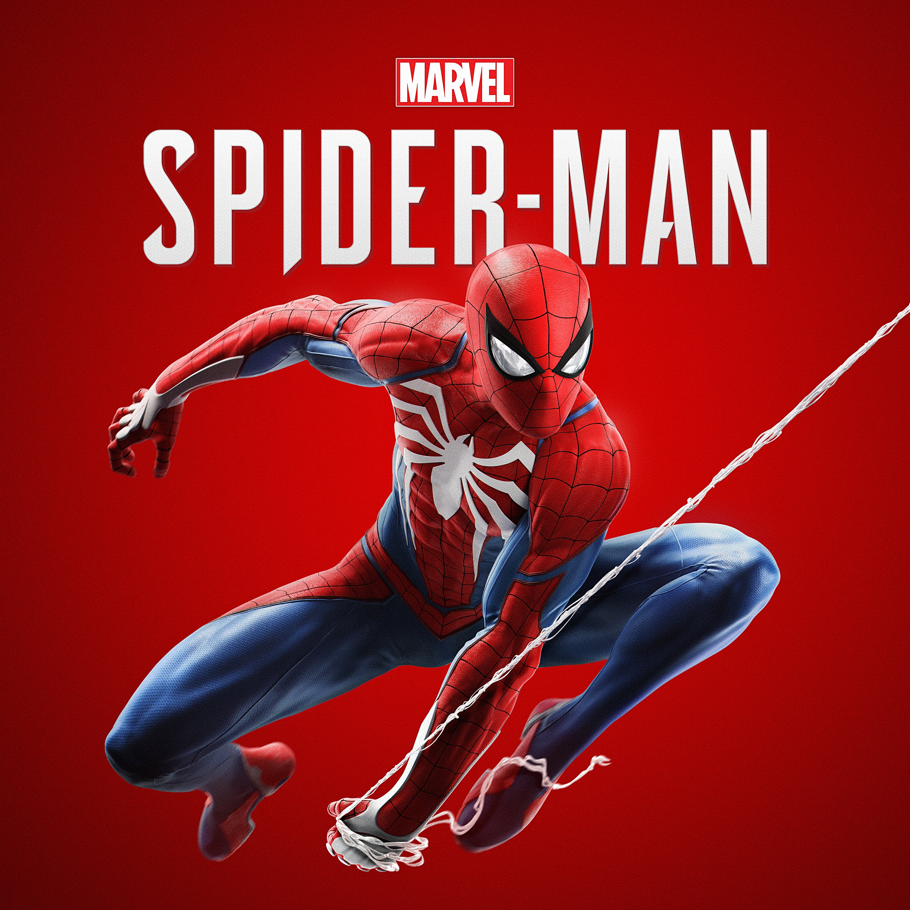
Marvel's Spider-Man — это видеоигра, в которой игрок управляет Питером Паркером, известным как Человек-Паук, в открытом мире Нью-Йорка.
Игра сочетает в себе элементы приключенческого экшена и стелс-геймплея. Питер Паркер сражается с преступностью и злодеями, используя свои
уникальные паучьи способности и акробатические навыки. Сюжет следует за его повседневной жизнью и борьбой с преступностью, а также включает
в себя встречи с знаменитыми персонажами из вселенной Marvel. Игра отличается кинематографичным повествованием, динамичным геймплеем и великолепной
реализацией паучьих передвижений по городу.
Marvel Человек-Паук: Майлз Моралес
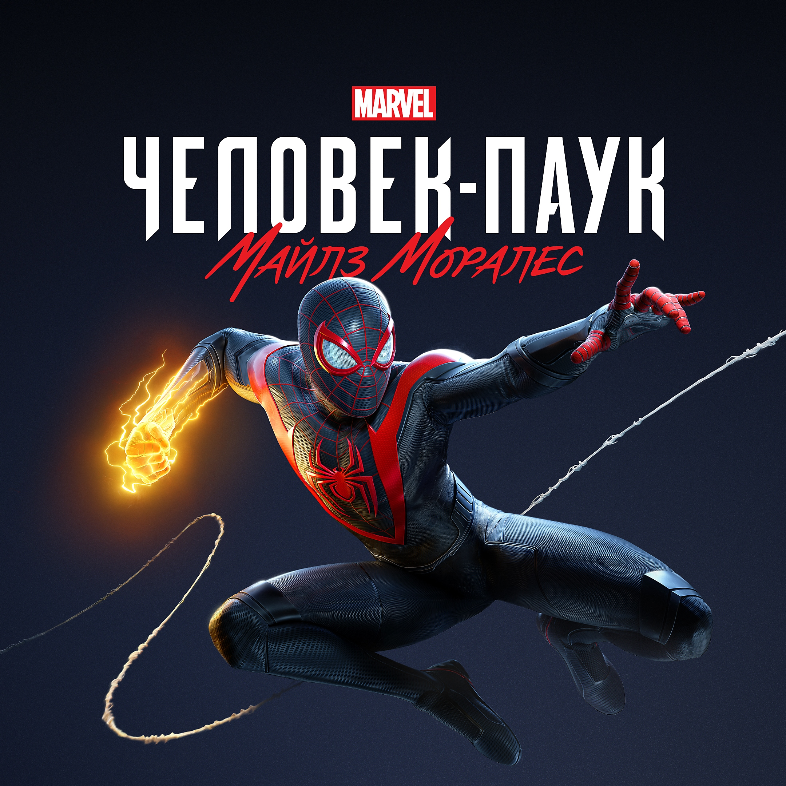
Marvel Человек-Паук: Майлз Моралес - это видеоигра, являющаяся продолжением предыдущей игры Marvel's Spider-Man. Игрок управляет Майлзом Моралесом,
подростком с уникальными паучьими способностями, в том числе электрическими ударами. Сюжет развивается в Нью-Йорке, когда Майлз пытается вступить в свою
роль Человека-Паука, одновременно защищая город от нового злодея и обучаясь под руководством оригинального Человека-Паука, Питера Паркера. Игра предлагает
улучшенные графику и геймплей, а также продолжает рассказ о приключениях в этом уникальном уголке вселенной Marvel.
Marvel Человек-Паук 2
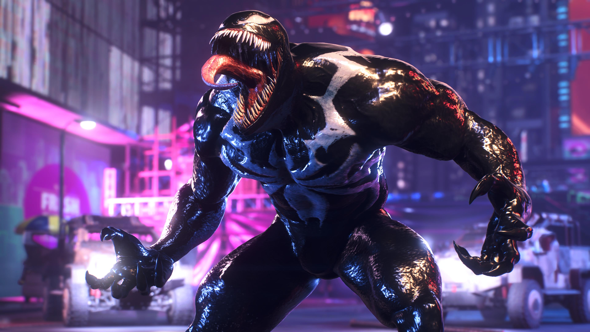
Marvel Человек-Паук 2 — однопользовательская игра в жанре приключенческого боевика с видом от третьего лица. Игрок управляет двумя протагонистами —
Питером Паркером и Майлзом Моралесом. Оба персонажа передвигаются по открытому миру в городе Нью-Йорк и противостоят различным преступникам.
В игре есть возможность приобретать дополнительные способности и костюмы Человека-паука.
По сюжету двум протагонистам предстоит сразиться с суперзлодеями Крейвеном-охотником, Песочным человеком и Ящером, а также столкнуться с Веномом.
Assassin's Creed Mirage
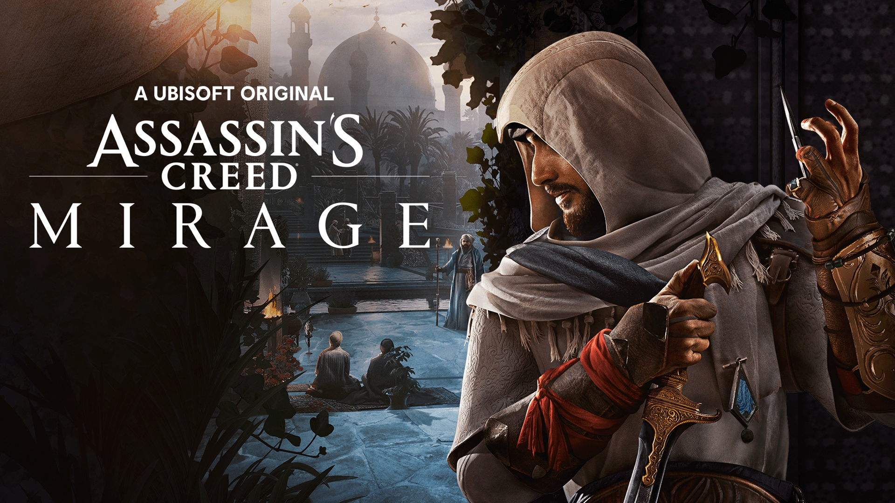
Assassin's Creed Mirage — однопользовательская игра в жанре приключенческого боевика с видом от третьего лица. Действия игры развернутся в Багдаде IX века,
за 20 лет до событий «Assassin's Creed: Вальгалла». Главным героем выступит Басим ибн Исхак, хитрый уличный вор, жаждущий справедливости и ответов на
преследующие его кошмарные видения.
Assassin's Creed Синдикат
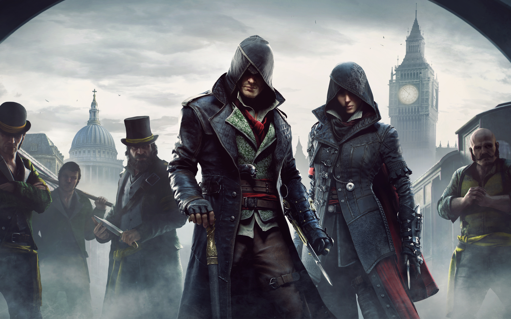
Assassin's Creed Синдикат - это видеоигра в жанре экшен-приключения, выпущенная в 2015 году. События игры происходят в Лондоне в конце XIX века.
Игрок управляет близнецами Эвелин и Джейкобом Фрай, борющимися против тамплиеров и их влияния в городе. Геймплей включает в себя боевые действия, скрытность,
исследование открытого мира и управление подпольной организацией, направленной на освобождение Лондона от контроля тамплиеров.
Horizon Zero Down
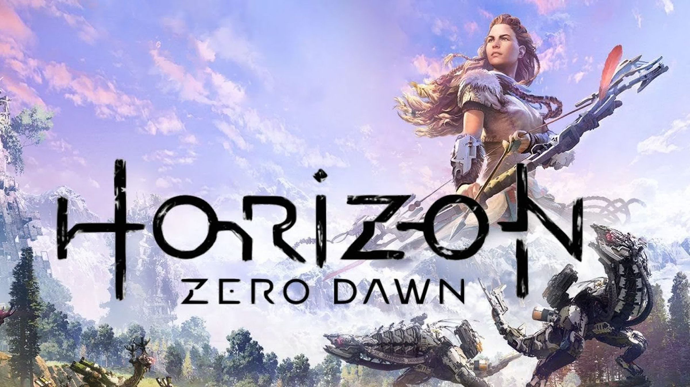
Horizon Zero Dawn - это экшен-ролевая игра, выпущенная в 2017 году. События развиваются в постапокалиптическом мире, где игрок управляет охотницей
по имени Элой, борющейся с механизированными тварями. Геймплей включает в себя охоту, использование луков и технологических устройств, а также исследование
уникальной открытой вселенной.
Horizon Запретный Запад
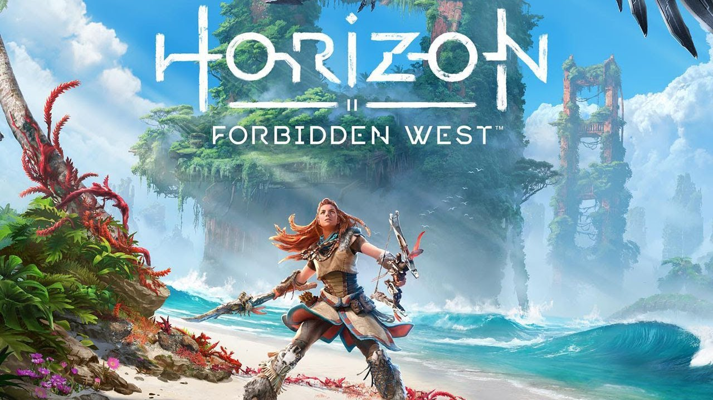
Horizon Запретный Запад - это ролевая игра в жанре экшн от третьего лица. Игрок управляет Элой, охотницой в мире, населенном опасными машинами,
похожими на животных. В открытом мире она исследует таинственную границу, известную как Запретный Запад, постапокалиптическую версию Западной
части Соединенных Штатов.
God of War
God of War - это перезапуск серии игр God of War. Игра следует за Кратосом, бывшим богом войны, и его сыном Атреем, в их эпическом
путешествии по мифологическому миру Скандинавии. В отличие от предыдущих частей, игра внесла изменения в геймплей, предоставив более глубокий
сюжет. Игра была высоко оценена за свою историю, визуальные эффекты и геймплей.
God of War Рагнарёк
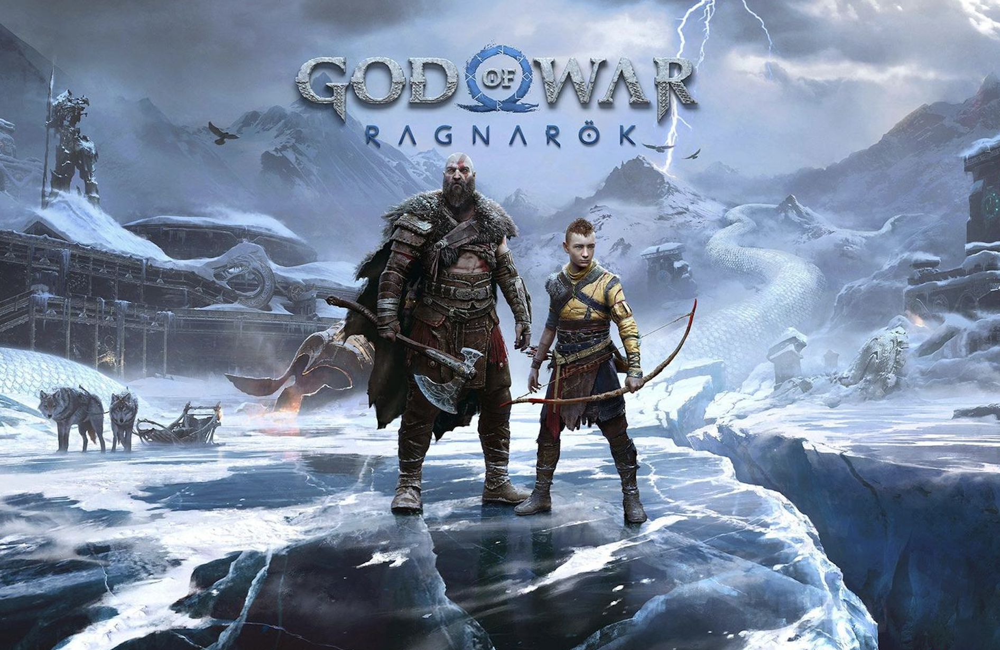
God of War Рагнарёк — прямое сюжетное продолжение экшена God of War 2018 года. Греческий бог войны Кратос со своим сыном Атреем продолжит
сражаться против северных богов и попытается спасти мир от очередного конца света.
Grand Theft Auto V
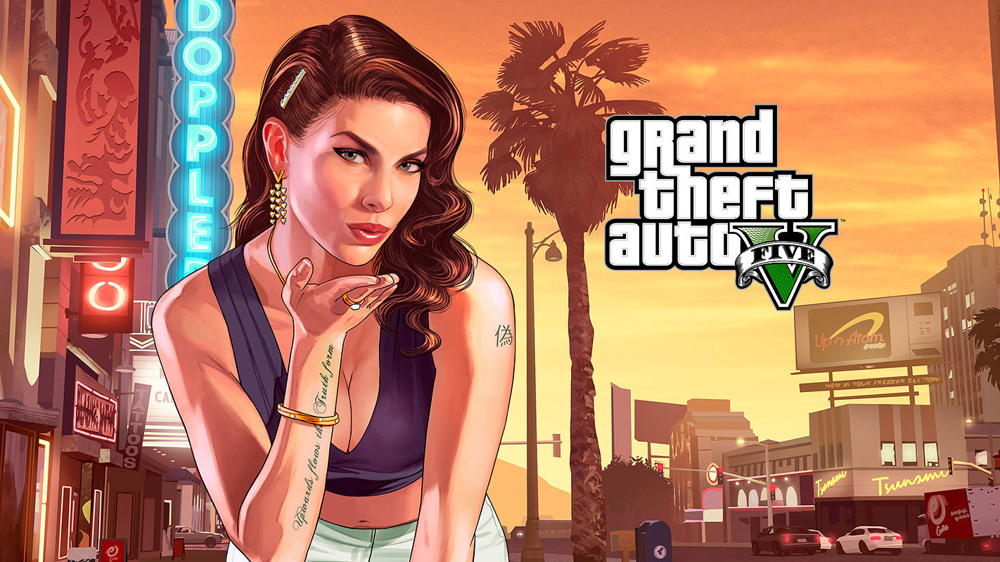
Grand Theft Auto V- это открытый мир в жанре экшен с элементами гонок и стрельбы. Игра разработана студией Rockstar North и выпущена в 2013 году.
Сюжет следит за тремя преступниками — Майклом, Тревором и Франклином — в их попытках совершить ограбление в вымышленном городе Лос-Сантос,
основанном на Лос-Анджелесе. Игроки могут свободно исследовать огромный мир, участвовать в различных миссиях и заниматься различными видами деятельности.
Жизнь - странная штука 2
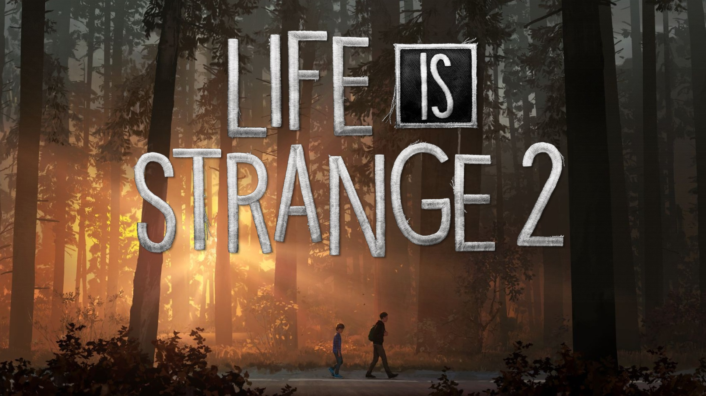
Сюжет игры рассказывает о братьях Диасах, 16-летнем Шоне и 9-летнем Даниэле, которые вынуждены оставить дом в Сиэтле после произошедшей там трагедии.
Они опасаются преследования полиции и бегут в Мексику, по пути разбираясь с внезапно проявившимися сверхспособностями.
Вдали от дома, преодолевая тяготы и невзгоды, Шон ощущает весь груз ответственности за судьбу брата — ведь от его решений зависит их будущее.
Ghost of Tsushima
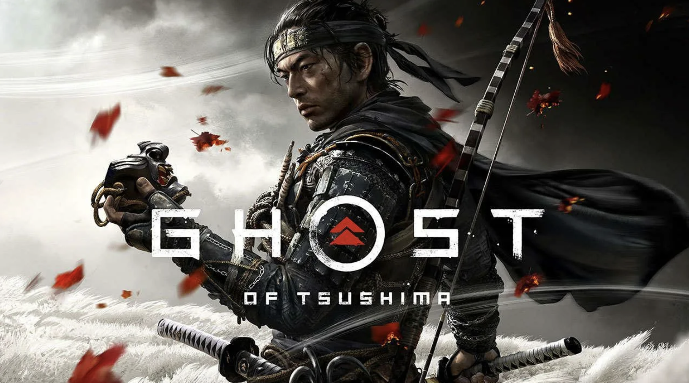
Ghost of Tsushima - это экшен-приключение, выпущенное в 2020 году для PlayStation. Игроки управляют самураем по имени Джин Сакай на острове Цусима
в период японских монгольских вторжений. Главная тема - борьба за защиту своего рода и культуры. Игра отличается красивой графикой, свободой исследования
и динамичными боями.
Detroit: Стать человеком
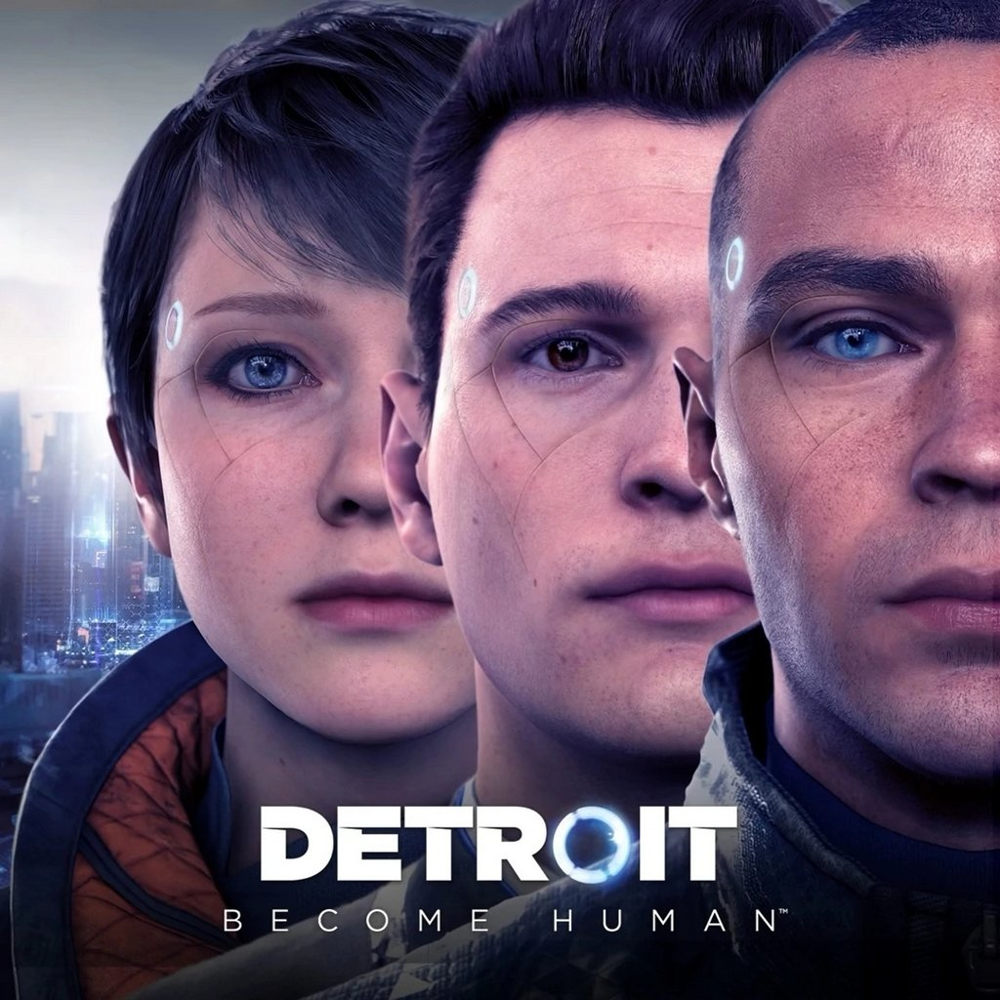
Detroit: Стать человеком - это интерактивный кинематографический опыт, выпущенный в 2018 году Quantic Dream. Игроки следят за историями трех
андроидов - Карлоса, Маркуса и Кары - в городе Детройт в близком будущем, где искусственные создания начинают проявлять эмоции и стремления к свободе.
Решения игрока влияют на развитие сюжета и его множество возможных концовок. Игра известна своим визуальным стилем, моральными дилеммами и глубоким повествованием.
A Way Out
A Way Out - это кооперативная видеоигра, выпущенная в 2018 году Hazelight Studios. Игроки берут на себя роли двух заключенных, Лео и Винсента, которые совершают
побег из тюрьмы и затем преследуют личные цели вне её стен. Главная особенность игры - кооперативный геймплей, требующий взаимодействия обоих игроков для решения
головоломок и преодоления испытаний. A Way Out подчеркивает важность совместных усилий и взаимодействия в ходе игры.
It Takes Two
It Takes Two - это кооперативная игра, выпущенная в 2021 году Hazelight Studios. Игроки управляют двумя куклами, созданными волшебным заклинанием, и вступают
в увлекательное приключение в фантастическом мире. Главная особенность игры - полное взаимодействие и совместные усилия двух игроков, которые должны работать в
паре для решения головоломок и преодоления испытаний. It Takes Two предоставляет уникальный опыт, требующий активного взаимодействия обоих игроков для
продвижения вперед и развития истории.
ASTRO's PLAYROOM
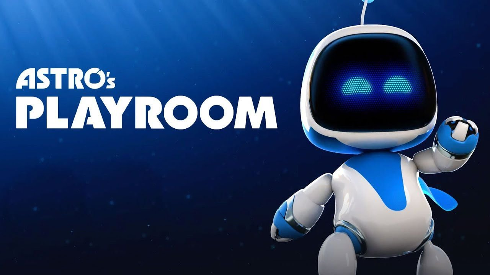
Astro's Playroom - это видеоигра, разработанная Japan Studio и включенная в состав PlayStation 5 в качестве предустановленной игры. Она представляет собой платформер
с элементами приключенческого геймплея. Главный персонаж, Astro, исследует различные уровни, представляющие различные компоненты консоли PlayStation, такие как CPU и GPU.
Игра служит также в качестве демонстрации технических возможностей PlayStation 5, включая использование нового контроллера DualSense с его уникальными функциями тактильной
обратной связи и адаптивных триггеров. Astro's Playroom призвана показать возможности новой игровой консоли и предоставить развлечение для игроков.
Goat Simulator
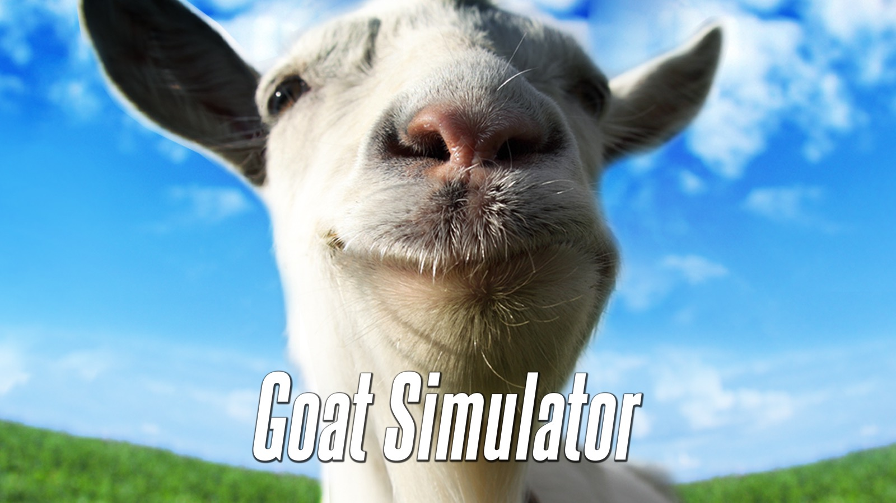
Goat Simulator - это необычная и юмористическая видеоигра, выпущенная в 2014 году. Игроки управляют козой и исследуют открытый мир, выполняя различные абсурдные
действия и вызывая хаос. Игра известна своей беспорядочной физикой и нестандартным подходом к симуляции, ставящим под сомнение серьезные аспекты других симуляторов.
Goat Simulator призвана развлекать и порождать смех у игроков своим необычным и абсурдным геймплеем.
My Name is Mayo
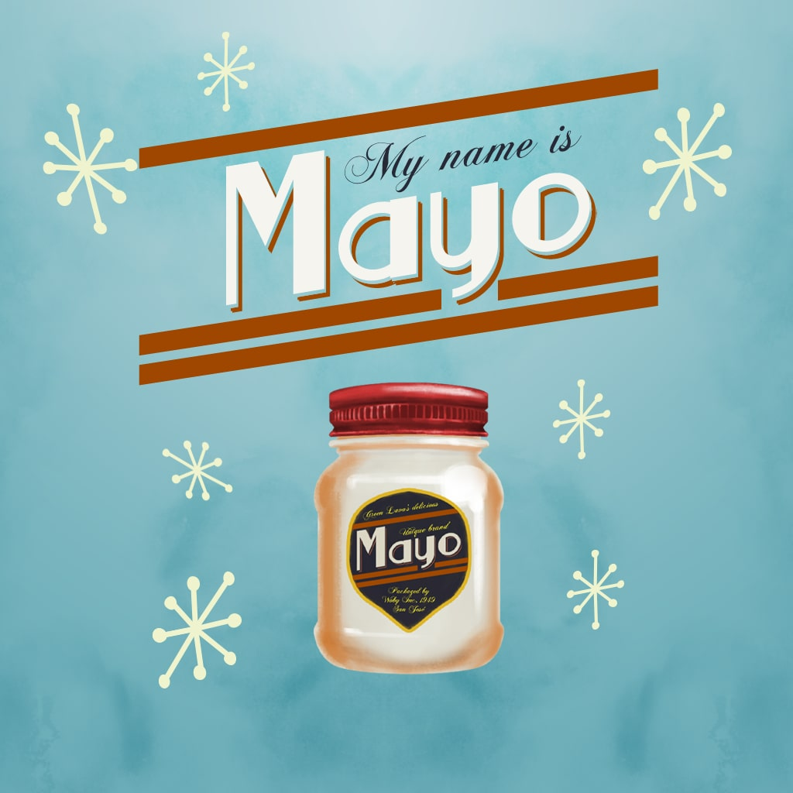
My Name is Mayo - это необычная и минимальная по игровой механике игра, выпущенная в 2016 году. В основном, это "кликер" (clicker) с простым геймплеем, где игроки
должны многократно кликать по банке с майонезом. Цель - заработать очки и разблокировать различные костюмы для банки майонеза. Игра приобрела известность благодаря
своей простоте, сюрреалистичному юмору и непривычной концовке. My Name is Mayo стала объектом внимания сообщества благодаря своей необычности и стала популярной
среди тех, кто ищет удивительные и нестандартные игровые опыты.
Особо внимательные могли заметить, что здесь изображено меньше игр, чем указано в начале в количестве платин. Всё дело в том, что при переходе с PS4 на PS5 можно заново
получить платину, просто зайдя в игру. Пример таких игр в моем случае: "Одни из нас: Часть II", "Grand Theft Auto V". Также, чтобы не повторять список, я убрал игру
"Одни из нас: обновленная версия". В этом случае я прошёл эту игру на платину на PS4, а затем приобрел "Одни из нас: Часть I", где заново выбивал платину.
Спасибо, что всё посмотрели!